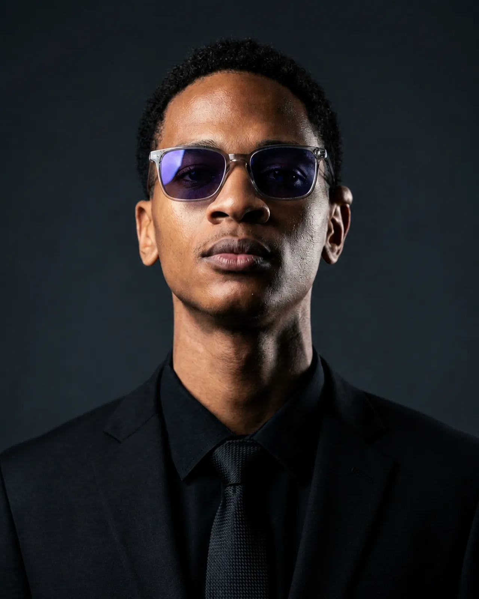

Observe
I take time to understand the real problem before choosing a solution.
About Sibusiso
Curiosity drives me to build practical systems where mechanics, electronics, and intelligent software meet.

Observant by nature.
Practical by discipline.
01 / Foundation
Long before university, I spent time helping my father repair and work on cars.
Those early experiences made me curious about how mechanical systems function, how parts fit together, and how a working system could be made better. That curiosity, combined with a fascination for technology, led me naturally to mechatronics.
In 2026, I completed my undergraduate studies in Mechatronics and Industrial Instrumentation Engineering at the Botswana International University of Science and Technology. My focus remains embedded systems, industrial automation, and intelligent control.
02 / Practice
Field work has taught me to connect theory with the realities of installation, control, safety, and dependable operation.
Installation and commissioning
Contributed to the installation and commissioning of an oxygen production plant in Kanye, gaining direct experience with equipment integration and critical infrastructure.
Industrial control
Rewired control cabinets to support both local and remote operation, translating control requirements into safe, practical electrical work.
Final-year project
Developed an embedded condition-monitoring system that brought together sensing, analysis, and practical maintenance insight. The project received the Best Project award in my course.
03 / Method
“If a system performs its function but wastes time, effort, or resources, there may be a better way to design it.”
I take time to understand the real problem before choosing a solution.
I research, ask questions, experiment, and learn from the people around me.
I favour practical solutions that simplify processes and reduce unnecessary work.
I value dependable systems, collaboration, adaptability, and work completed on time.
04 / Beyond engineering
I am fairly reserved, but I am good company once I am comfortable. Away from technical work, you will probably find me watching anime, playing Call of Duty: Mobile, or saying yes to a new adventurous experience, or side quests as i would call it.
My Christian faith is an important part of my life. As a Seventh-day Adventist, I value integrity, responsibility, and living with purpose.
05 / Looking ahead
I want to become an engineer known for competence, dependability, and meaningful contribution. I am especially interested in how automation and intelligent systems can strengthen industrial capability in Botswana and across Africa.